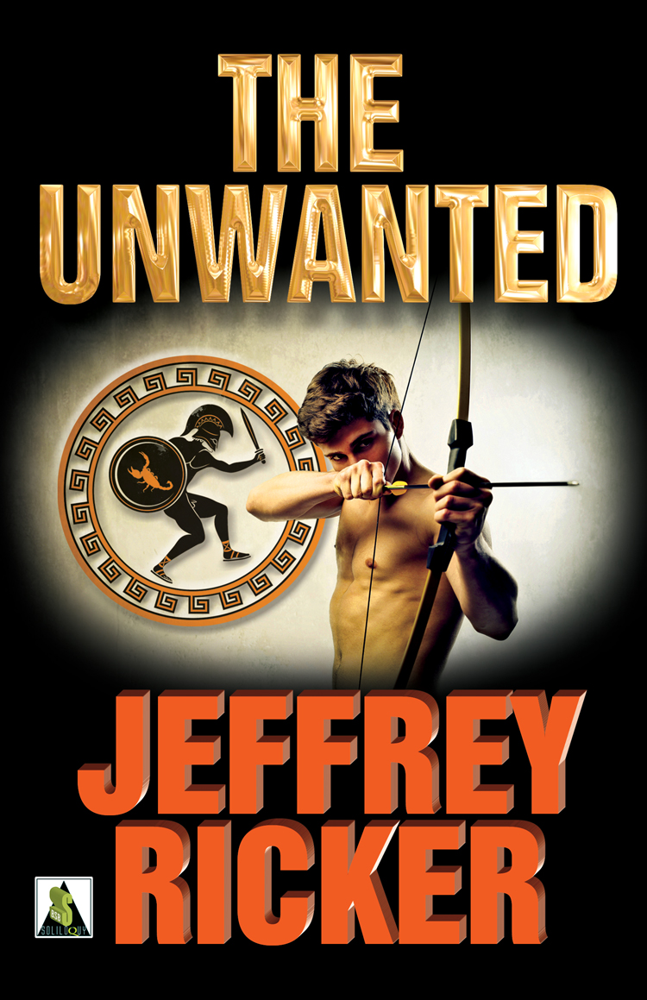

Short Stories
I've written and published over two dozen stories. Here are some of them:
- At the End of the Leash/Fool for Love, Cleis Press, 2008
- Blackout/Night Shadows: Queer Horror, Bold Strokes Books, 2012
- Maternal Instincts/Untreed Reads, 2011
- Multiverse/Phoebe Journal, 2017
- Murder on the Midway/Men of the Mean Streets, Bold Strokes Books, 2011
- New Normal/Untreed Reads, 2010
- Scorned/The Lavender Menace: Tales of Queer Villainy, Northwest Press, 2013
- Shepherd/Foglifter Journal, 2017
- Snowblind/The Bears of Winter, Bear Bones Books, 2014 (Lambda Literary Finalist)
- Straightening Up/Untreed Reads, 2012
- Tea/Foolish Hearts, Cleis Press, 2014 (Lambda Literary Finalist)
- The Visitor/Collective Fallout magazine, vol. 1, issue 2, 2009*
YA
- Looking For Bigfoot/Little Fiction*
- The Trouble with Billy/Speaking Out, Bold Strokes Books, 2011*
Erotica
(These stories may be a little (or a lot) NC-17; reader discretion advised!)
- The Key Ingredient/The Dirty Diner, Bold Strokes Books, 2012
- Finish Line/Sweat, Bold Strokes Books, 2012
- Landfall/Wings, Bold Strokes Books, 2011
- Lifeblood/Blood Sacraments, Bold Strokes Books, 2009
- Mount Olympus/Riding the Rails, Bold Strokes Books, 2011
- The Last Goodbye/Anything for a Dollar, Bold Strokes Books, 2013
- Satan Takes A Holiday/Raising Hell, Bold Strokes Books, 2012
Novels
Detours
My first novel came out in 2011.

The Unwanted
My second novel was a young adult fantasy that was published in 2014.